(2007-03-16 11:51:32)
现在如果要摆脱目前的中枢，没有金融股的配合基本是不可能的。
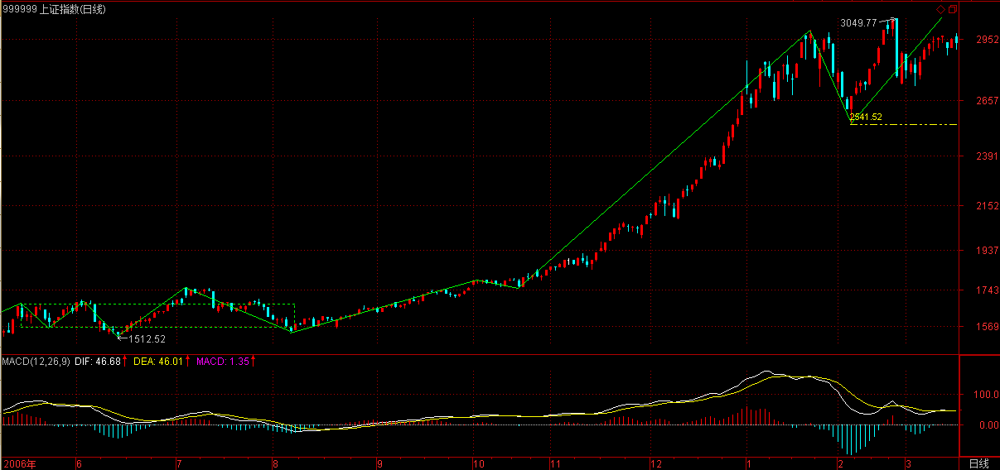
但金融股由于某类人掌握得比较厉害，短线的攻击没问题，但一个持续的攻击，就有点困难了。【韶山映山红】什么情况？★以后研究。】
不过金融股在中线角度，依然还是一大早的观点，用工行为例子，就是围绕5元上下的一个大级别震荡，要大跌，打压的人是要付出代价的。
【韶山映山红】601398工商银行。】
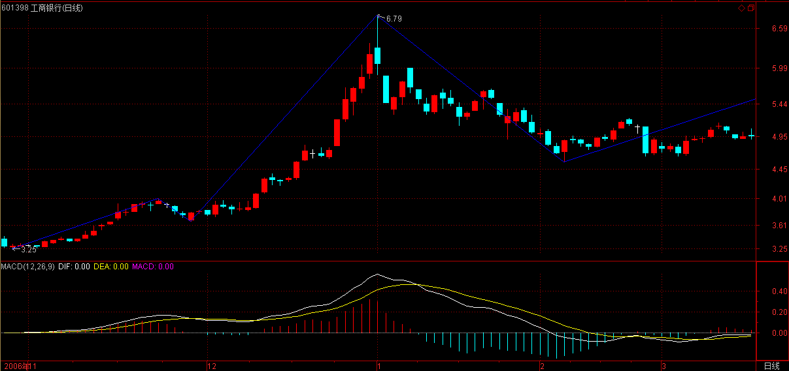
顺便说一句，中行里的汉奸实力小点，中行有奥运概念、业绩也较好一点，能否改造成一个反汉奸的武器，成为一个突破口，还需要很大的努力。其实这改造已经不是一天两天的事情，中行这几天已经连续比工行股价要高了，这就是成绩。
【韶山映山红】601988中国银行。】
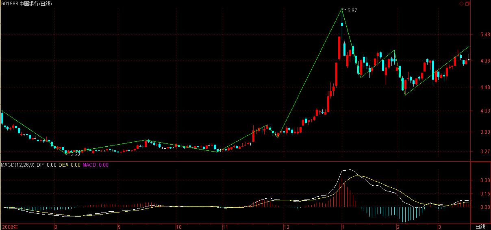
具体的细节就不说了，总之，斗争是残酷的，是复杂的，不能赤膊上阵，要用最充分的耐心去消耗汉奸的实力。
【韶山映山红】缠师就是这样把这段附录放在篇首的位置了，红色加粗字体。】
背驰问题说过多次，但发现还有很多误解。不妨用最典型的a+A+b+B+c为例子把一些经常被混淆的细节进行说明。
没有趋势，没有背驰，不是任何a+A+b+B+c形式的都有背驰的。【韶山映山红】这里的趋势已经是整个的趋势走势类型了，不再是早期的中枢前后的一段。】
【韶山映山红】写成“a+A+b+B+c形式”，并不等于就是趋势。其中的每一个字母都有可能是任意级别。能够确认的只有：a、b、c表示连接段，A、B表示中枢。】
当说a+A+b+B+c中有背驰时，首先要a+A+b+B+c是一个趋势。【韶山映山红】只有趋势才有背驰。其他的都是盘整背驰。】
而一个趋势，就意味着A、B是同级别的中枢，否则，就只能看成是其中较大中枢的一个震荡。例如，如果A的级别比B大，就有a+A+b+B+c=a+A+（b+B+c），a与（b+B+c）就是围绕中枢A的一些小级别波动。这样，是不存在背驰的，最多就是盘整背驰。【韶山映山红】中枢类盘整背驰，包括a+A盘整背驰和a+A+b盘整背驰。】
【韶山映山红】延伸思考：如果A的级别比B大，表达式a+A+b+B+c里面AB级别混排，那么，abc又是什么级别？★AB级别不同，都同样用大写字母表示，也就意味着abc没有需要表达的中枢。由此可以推断，abc都是低级别的走势类型，是连接段。B是高一个级别的中枢，A是升级的更高级别的中枢。】
【韶山映山红】延伸思考：如果A的级别比B大，表达式a+A+b+B+c里面A中枢有第三类买卖点吗？也就是说，（b+B+c）里面包含了A中枢的第三类买卖点吗？★不一定。准确的说，这个公式是基于B级别的，A是升级中枢，即使没有第三类买卖点，也不影响（b+B+c）的表达。】
当然，对于最后一个中枢B，背驰与盘整背驰有很多类似的地方，【韶山映山红】形态可以完全一样。不一样的是结构分析和未来走势的分类。都有哪些不一样呢？★可以做个专题。以后研究。】
用多义性，可以把b、c当成B的次级波动。【韶山映山红】把b、c当成B的次级波动，关注的就是背驰与盘整背驰类似的地方。站在B中枢的角度看，b、c就像离开中枢星球的运动，受到B中枢回拉力的影响。】
但多义性只是多角度，不能有了把b、c当成B的次级波动这一个角度，就忘了a+A+b+B+c是趋势且A、B级别相同的角度。【韶山映山红】把b、c当成a+A+b+B+c趋势的连接部分，关注的就是背驰与盘整背驰不同的地方。】
【韶山映山红】静姐的解读，B中枢的b、c可以比较力度判断是否回中枢。但是不能忘记，a+A+b+B+c表达的是趋势，c、b背驰的时候，不只是回中枢的问题，还可能是趋势的完结，有新走势甚至反向趋势的形成。如果只考虑b+B+c的盘整背驰，就只会只考虑回到中枢就结束了。这是不考虑整个走势类型的完整性，而只考虑局部的问题，那就和盘整背驰一样了。】
多义性不是含糊性，不是怎么干怎么分都可以，这是必须不断反复强调的。【韶山映山红】多义性也要有确定的分析，而不是制造更多的模棱两可。】
【韶山映山红】若禅精舍（陈秋明）：
本节内容主要对标准情况下的背驰，做了详细的梳理。背驰，在理论中只相对于趋势而言，也就是只有趋势背驰才是理论定义中的背驰，其他的所有类似情况，都属于背驰的推广应用，如abc结构的盘整背驰，aAb结构的盘整背驰，中枢震荡中产生的盘整背驰（其实是abc结构中的一种）等，这些只能属于是利用背驰的原理，在其他形态结构上的应用。
显然，趋势背驰是最基础的，对于理论定义来说，这个趋势需要满足理论情况的需要，以30分钟下跌趋势为例。
首先，这个趋势有至少两个同向不重叠的30分钟级别中枢，这是一定的，以aAbBc来表示这个下跌趋势，那么abc三段的走势级别，一定是小于A和B中枢级别的，也就是abc三段最多是5分钟级别走势类型，这样的形态结合（abc分别都是5分钟级别走势类型，AB都是30分钟级别中枢），是最标准的趋势结构。
其次，c段一定包含对中枢B的第三卖点，否则，c段只是围绕中枢B的次级震荡，相当于一段试图离开中枢区间的次级别走势，这种情况下，中枢B在形态上还不能确认结束。
而只要c段包含对中枢B的第三卖点，那么c段的内部结构一定符合5分钟级别走势类型离开后，以5分钟级别走势类型返回，并同时构成对中枢B的第三卖点。
】
其次，c必然是次级别的，【韶山映山红】c不能是更低级别的，否则就不是趋势背驰。】
也就是说，c至少包含对B的一个第三类买卖点，【韶山映山红】c包含B的第三类买卖点，B才完成了，才能够真正确认c的存在。如果没有B的第三类买卖点，中枢B就没有完成，就还是B中枢的延伸震荡。】
否则，就可以看成是B中枢的小级别波动，完全可以用盘整背驰来处理。【韶山映山红】对于a+A+b+B+c趋势，如果c没有中枢B的第三类买卖点，实际上就是a+A+b+B，做中枢B的离开段的盘整背驰处理，也就是a+A盘整背驰处理。】
【韶山映山红】不符合c要求的，包括两种情况：１，离开段的级别低于次级别。这种情况如果发生趋势级别的转折，的盘整背驰没有意义。不背驰的离开才需要关注。２，离开段的级别是次级别，但是没有B的第三类买卖点。的时候，“看成是B中枢的小级别波动，完全可以用盘整背驰来处理。”
【韶山映山红】c包含B中枢的第三类买卖点，形成趋势背驰的时候，比较的是c、b两段。c没有B中枢第三类买卖点的时候，“看成是B中枢的小级别波动”，“用盘整背驰来处理”，这时候参与比较的是谁？★
静姐的解读：如果没有三买的情况，比较的是离开段和前一个向上段。有了三买之后，比较的是离开段和进入段。前提不一样，比较的位置就不一样。如果没有三买，因为比较的是次级别的波动结束，中枢内部次级别的中枢震荡，是跟中枢相邻的前一段去比较。如果出现三买，是本级别比较力度的情况，是比较中枢的前后两段，而非次级别的两段。比较的位置是不一样的。这一点一定要注意。很多人都比较混淆，这是由于你对级别的不清楚造成的。因为出现三买的时候，本级别中枢结束了，比较的是本级别的东西。中枢结束是整个走势类型的结束，所以比较的是中枢前后两段。比较相邻的两段，比较的是什么？是次级别结构的结束，一旦跟相邻的比较结束，她就还会下来，继续次级别的中枢震荡，没有结束，所以比较的是次级别，不存在本级别的问题。你要是不知道哪两段进行比较，证明一点，你对级别的概念是混淆的。
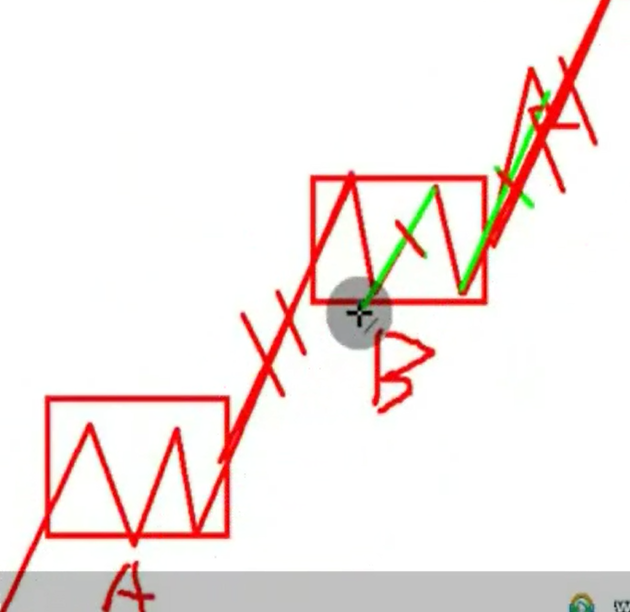
严格说来，中枢离开段和前一个向上段的比较，只是决定了当下的走势如何演化，却不足以判断中枢是否延伸震荡。比如，前一个向上段离开ZG比较多的时候，即使当前的离开段有线段类盘整背驰，也不足以返回中枢，反而更可能形成三买，尤其是奔走型中枢。所以三段中枢的14组合，都会有不同的具体情况，再延伸就更复杂了，必须把几种力度判断组合起来分析。
以前我把中枢类盘整背驰分别称为“中枢离开段盘整背驰”和“a+A+b中枢盘整背驰”，这样的称呼确实只描述了形态，混淆了级别，而且离开段也没有区分是否包含第三类买卖点的情况。以后可以改成“中枢a+A盘整背驰”和“中枢a+A+b盘整背驰”。这样就清晰明了了。 】
而b是有可能小于次级别的，力度最大的就是连续的缺口，也就是说，b在级别上是不能大于c的。【韶山映山红】c必须是次级别的，否则B就没有完成。所以b是不可能大于c的。背驰段都是预先假设、然后再求证的，如果当下的c还没有完成，一开始的时候还是可能级别低于b，所以还要有这一段的述说。】
例如，如果b是次级别，而c出现连续缺口，即使c没完成，最终也延续成次级别，但c是背驰的可能性就很小了，【韶山映山红】c开始的级别太小、力度又太大，“即使c没完成”，我们此时也可以预判，即使c“最终也延续成次级别”，背驰的可能性也是很小的，更何况，c能不能“延续成次级别”，还不好说呢。背驰的可能性很小，就意味着趋势延伸的可能性很大，这样就给暴涨暴跌走势的分析带来麻烦。如何区别两种情况？以后研究。★】就算是，最终也要特别留意，出现最弱走势的可能性极大。【韶山映山红】注意：上涨趋势出现最弱走势意味着调整很弱，而不是上涨很弱。趋势背驰“只触及最后一个中枢的DD=min(dn)的反弹，就是背弛后最弱的反弹。”】
【韶山映山红】这段话更应该从另一个角度看。当趋势a+A+b+B+c的c以低级别迅猛离开中枢的时候，发生背驰的可能性较小。★那么，如何辨别是最后一次的暴拉，还是小级别快速离开？以后研究。】
【韶山映山红】若禅精舍（陈秋明）：
c段跳空下跌，或者力度很大的下跌，即使c段最终与b段相比是背驰段，但后续走势弱化扩展的可能性就比较大，其原因就在于合力对中枢B以下价格的认同度较大。
在实际操作中，背驰段一定会有背驰所必然反映的作用，但背驰的力度大小是判断后续走势的重要依据之一。这可以这样理解，b段的力度是10，而c段的力度如果是9.8，那么虽然c段是背驰段，但后续反转的可能性就比较小，而如果b段力度是10，c段力度是1，那就完全不同了。
】
还有，如果a+A+b+B+c是上涨，c一定要创出新高；a+A+b+B+c是下跌，c一定要创出新低。【韶山映山红】c一定要创出新高/新低，是相对B中枢的次级别震荡而言。是一定要c的终点创出新高/新低，还是c的区间创出新高/新低就行？因为走势类型的终点不一定是最高最低点。★以后研究。】
【韶山映山红】对c3来说有两种情况： １，c3高于c1。如果c对b盘整背驰，c3对c1线段类盘整背驰，c3内部背驰。趋势背弛。 ２，c3低于c1。如果c对b盘整背驰，c3比c1低，比线段类盘整背驰还弱，c3内部背驰。趋势背弛。】
【韶山映山红】后面问答里有：“如果不创新高，那依然在C2里，C2都没完成，怎么知道他一定不跌回原来的中枢里？”】
否则，就算c包含B的第三类买卖点，也可以对围绕B的次级别震荡用盘整背驰的方式进行判断。【韶山映山红】c新高/新低就用趋势背驰的方法做判断。c没有新高/新低，就意味着在B中枢的震荡区间将有新的同级别中枢产生，就要发生扩展升级了。★问题１：谁是“围绕B的次级别震荡”？把c视为“围绕B的次级别震荡”吗？★问题２：怎样把c当做“围绕B的次级别震荡”，“用盘整背驰的方式进行判断”？算a+A+b盘整背驰？还是忽略第三类买卖点？把a+A+b+B+c看作是（a+A+b）+（B）+（c）的三段线段类走势，然后做线段类盘整背驰判断？c不新高就成了同级别二卖。★问题３：这时候c的盘整背驰算趋势背驰还是趋势的背驰？其力度分析有什么不同的对策？★以后研究。】
【韶山映山红】c包含B的第三类买卖点，没有新高/新低，“用盘整背驰的方式进行判断”。盘整背驰分三种：abc盘整背驰，a+A盘整背驰，a+A+b盘整背驰。★以后研究。】
【韶山映山红】实际上，c1离开B中枢的时候，才开始做中枢的盘整背驰判断，c1没有新高，连a+A盘整背驰比较都不存在，更不存在趋势背驰比较，即使c2形成了第三类买卖点，也还没有启动中枢盘整背驰判断。所以，只能是把c当做“围绕B的次级别震荡”，“用盘整背驰的方式进行判断”。走势类型怎么划分，还要想。★以后研究。】
对c的内部进行分析，由于c包含B的第三类买卖点，则c至少包含两个次级别中枢，否则满足不了次级别离开后次级别回拉不重回中枢的条件。【韶山映山红】c只包含两个次级别中枢的特殊情况，是指B的很低级别离开、次级别盘整返回、次级别盘整的再离开。“否则满足不了次级别离开后次级别回拉不重回中枢的条件”可以解读为：再次离开要有一个中枢，没有两个，就不能分配一个给返回了。这里的重点是“次级别回拉不重回中枢”。】
【韶山映山红】静姐说这种情况的两个次级别中枢是离开+回拉的两个。我认为是回拉+再离开的两个，否则就是最终的小转大，而不是趋势背驰了。★可以看看44课小转大的情况作为对比：“c至少要包含一个5分钟的中枢，否则，中枢B就不可能完成，因为这样不可能形成一个第三类的买点。”也就是说，形成第三类买卖点并不需要“c至少包含两个次级别中枢”，只需要“c至少要包含一个5分钟的中枢”。】
这两个中枢构成次级别趋势的关系，是最标准最常见的情况，【韶山映山红】“构成次级别趋势的关系”，说明并不是真的趋势，只是假扮夫妻。因为两个中枢分属两个走势类型。“构成次级别趋势的关系”也说明两个中枢的位置有高低之分，而不是在一起盘整＋盘整构成更大级别的盘整，所以才能够“构成次级别趋势的关系”。】
【韶山映山红】这个“最标准最常见的情况”是什么形态？★以后研究。】
这种情况下，就可以继续套用a+A+b+B+c的形式进行次级别分析确定c中内部结构里次级别趋势的背驰问题，形成类似区间套的状态，这样对其后的背驰就可以更精确地进行定位了。【韶山映山红】“形成类似区间套的状态”。这两个中枢不是真的趋势，所以没有区间套，只是“类似区间套的状态”，只能“套用a+A+b+B+c的形式进行次级别分析确定c中内部结构里次级别趋势的背驰问题”。“套用”，也佐证了不是真正的区间套。】
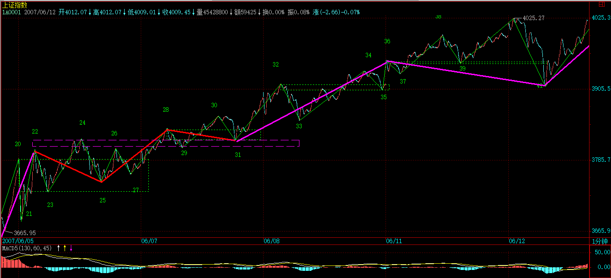
【韶山映山红】不是任何a+A+b+B+c形式的都有背驰的。背驰的前提条件包括：1，a+A+b+B+c是趋势（A、B级别相同）。 2，ｃ必然是次级别的，ｃ至少包含对B的一个第三类买卖点。 3，c一定要创出新高/新低。】
【韶山映山红】若禅精舍（陈秋明）：
以趋势的第二个中枢构成第三买卖点，其第二个中枢与第一个中枢是不同的。当然，在剧烈走势下，例如熊市或者牛市，也可以把第二个中枢简单的认为是第三买卖点，但这种第三买卖点，经常会碰到中枢震荡延续、小级别冲高后回跌之类的问题，严格来说，简单的把第二个中枢认为是第三买卖点是错误的。而对此的详细分析，必须以走势必完美为基础条件。
关于区间套，前面讲了很多了，但理论上说起来太抽象，可以用下面一段实际走势来直观体会一下。
图中最高点，是2018年9月26日下午13点30分附近，是标准的区间套顶背驰，微博上在13点37分发了个“winter is coming”的图片，说的就是这个顶背驰。当下不能判断的缠论学习者，全部不合格，但能判断的也只能说有了一点基础，并不能说明其他。所有学习缠论的人，一个最基本的要求，就是能当下把握指数的高低点，这相当于数学的九九乘法表，否则理论推演说的天花乱坠也没用。
】
最近太忙，不能写太长了。
补充两句关于大盘目前的走势，说实在，现在如果要摆脱目前的中枢，没有金融股的配合基本是不可能的。
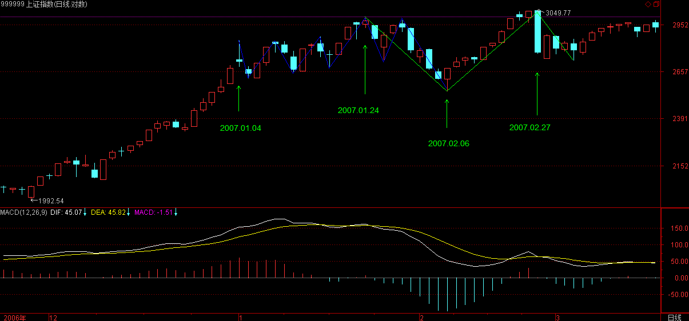
但金融股由于某类人掌握得比较厉害，短线的攻击没问题，但一个持续的攻击，就有点困难了。不过金融股在中线角度，依然还是一大早的观点，用工行为例子，就是围绕5元上下的一个大级别震荡，要大跌，打压的人是要付出代价的。
【韶山映山红】601398工商银行。】
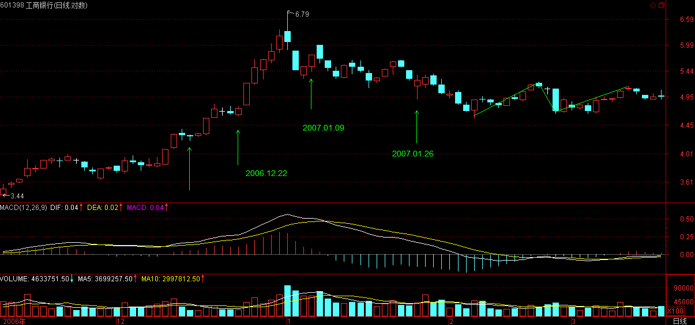
顺便说一句，中行里的汉奸实力小点，中行有奥运概念、业绩也较好一点，能否改造成一个反汉奸的武器，成为一个突破口，还需要很大的努力。其实这改造已经不是一天两天的事情，中行这几天已经连续比工行股价要高了，这就是成绩。
【韶山映山红】601988中国银行。】
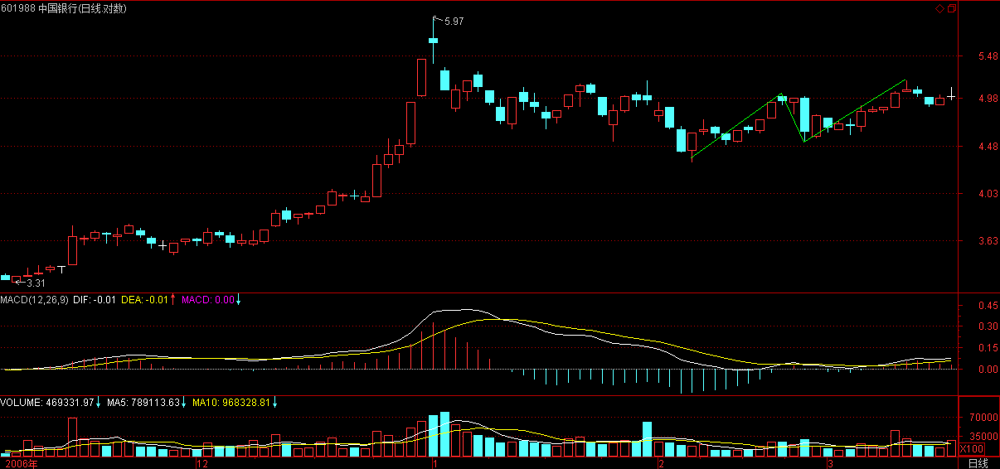
具体的细节就不说了，总之，斗争是残酷的，是复杂的，不能赤膊上阵，要用最充分的耐心去消耗汉奸的实力。
下午一收盘就要去开反汉奸利器出炉的最后一次会议，就来不了了。【韶山映山红】《基金分析》创刊。】
大盘走势，很简单，在第三类买点出现前，继续震荡，这种走势已经反复很多次了，应该熟练应对了，所以也没必要多说了。
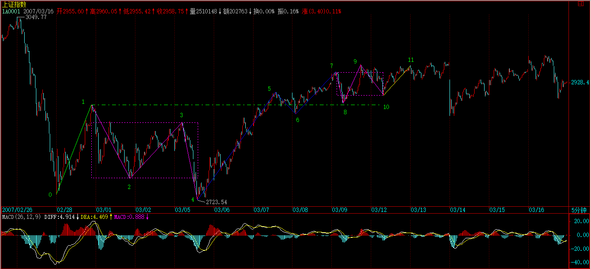
汉奸企图用两会结束打压的表演还会继续，这在昨天已经说了，所以斗争依然继续，结果不好说，努力吧。反正有的是时间，不会硬扛，但也不会放过任何一个契机的。
先下，再见。
2007-3-16 11:54
【网文】背驰的再分辨
(2012-05-21 20:06:44)
缠总写过一篇同题文章，这里用这个题目仅仅为了表达景仰！
背驰是动力学的核心，而动力学是将形态学用好的重要因素，总之，背驰的意义无比重大，但是对于背驰的理解，缠友们未必能真正深入到核心。这里将我的理解写下，以供缠友参考。
首先，背驰是不是当下确认的？还是像分型那样，先假定此处此级别背驰了，然后后续的走势确认了该背驰？这个问题如果不能确定，那么很容易导致偏信或者偏不信。
拿最小的背驰来说，某只股票现在技术上已经到最低点了，当下的被你和理论确认了。按照理论，是背驰了，该回调了。按照理论，应该回调到前一中枢中间的，对不对？在回调的过程中，还没到前一中枢的时候，突然！该股票出现重大利空！然后股票再次应声下跌！果断跌破前低。这样的情况，你怎么解释？当然，技术上，跌破前低的结果就是，小级别再次形成盘整背驰，但是总之，前一低点的背驰确认是失败了的！
这个重大利空，是突发性事件，后面的所有走势都站在了新的条件上。如果按照数学物理方面来说，应该是某个常量发生重大改变，影响了整个系统。所以，仅仅按照背驰一定至少回到原中枢内操作，是不完备的。
类似的情况，如何在操作层面彻底解决呢？首先，突发情况存在，但是大多数情况突发情况并不能改变在大级别的合力，所以，操作的起点至少是5分钟以上的，这样才有价值。
既然有了上面这个可能的反例，那么就彻底证明了，背驰并非是一个点，而是一种状态，该状态并不能保证如缠所说的回到前一中枢内。
禅总也说过：背驰是成功了的背驰，失败了的背驰是什么呢？背驰段！
第一种情况，背驰无法当下确认，但是可以假设确认，像分型那样，也就是说，我刚刚说的假设是正确的。第二，背驰如何发生突发情况使得原趋势继续，则形成背驰段，从原假设背驰点开始算，开始延伸，再此，观察小级别，从背驰当下计算，如果原趋势延伸，就是背驰段，如果回到中枢内，则是成功的背驰！
背驰段的存在，实际上是缠论对于实际情况的妥协。有了背驰段，可以解释所有的问题。但是操作的灵活性又大大加强了 。
(2007-03-18 12:13:30)
所谓三高污染世界的时代过去，世界变得更可爱。但被虚假录音与恶劣品位污染的耳朵，就如同那些被不可降解的废弃垃圾所污染的土地，没有生机的未来，一片死寂。
一百多年前，一个最伟大的声音，对着最简陋的设备，那些比现在最低廉的录音机器还要简陋的设备，留给死寂的世界一片永恒的生机。有了这些录音，最伟大的声音穿过时间的鸿沟、穿过噪音的背景，依然鲜活地呈现，最丑陋的世界也变得光亮无比。一切世界的丑陋，都变得不再重要。
伟大的声音只需要倾听，一切的讲解都是多余的。
前段时间，由于上传网站出问题，音乐会听了几周，现在重新恢复。
卡鲁索，人类录音历史以来最伟大的男高音，1903到1906年的录音，就是对音乐会重张的最好礼物。
下午有事，只能先下，再见。
2007-3-18 12:17
(2007-03-19 08:52:42)
西海东瀛涨落潮，商林股道冷炎飙。
神州自有中天日，万国衣冠舞九韶。
以美欧日为动力源的全球化经济在2000年网络泡沫后出现历史性的发展瓶颈，而中国经济的崛起，是资本全球化历史与现实的必然要求，是一个有别于欧美日的全球经济新动力源的必然选择，是一个拥有最多人口、最大潜在市场的新兴经济体的必然承担，是不以任何人的意志为转移的必然趋势。
当中国经济成为全球化新动力源时，中国股市也应当成为世界股市的新龙头，成为面向世界的超级大市场。中国的交易所，必将成为世界性交易所，世界上的公司必将以能到中国上市为荣。这一切，将成为中国新一轮特大型牛市真正的动力源泉。对此的任何短视，都将错失这一历史性机遇。
从1986年9月26日延中实业上柜交易始，到2001年6月14日2245.42点止，近15年充满曲折的第一轮大牛市带来了其后一轮长达四年、幅度超过50%的全面调整，也留下了一个制度上存在严重缺陷的市场与无数的争论。所有的争论最终达成一个最基本的共识：股票，作为一种交易凭证，其最基础的制度必须保证所有股票都有相同的流通属性。2005年6月6日，六六大顺，以全流通为标志的制度性改革拉开新一轮大牛市的序幕。而中国股市的制度性改革，归根结底是顺应经济全球化背景下中国经济历史性崛起的必然抉择。
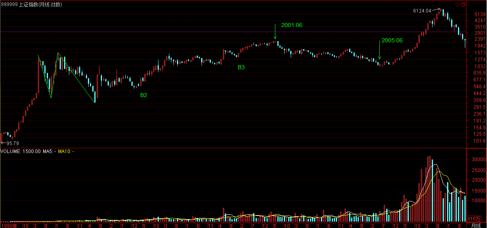
这一轮特大型牛市，至少同级别于第一轮大牛市。后者，即使从1990年的95点算起，最终涨幅也超过22倍。而世界股市的历史表明，第二轮大牛市的时间与幅度都无一例外地远远超越第一轮，即使按照最保守的1.5比例，由此可以推断，从998点起步已延续两年、上升2千点的新一轮特大型牛市，仍将至少再延续20年、上升3万点。站在中国成为全球经济新动力源的历史背景上，可以预言，这轮波澜壮阔的特大型牛市行情将分为三大阶段：
第一阶段行情，伴随着中国股市本身的制度性、结构性完善，其后，中国股市才真正具备参与全球化盛宴的资格。全流通、整体上市、两大交易所的功能重组、人民币逐步可自由兑换等，都不过是这种制度性、结构性完善的必然步骤。这一阶段，行情最主要体现在以权重股为代表的成分股上。在总市值超越GDP之前谈论股市的泡沫是可笑的，在中国股市总市值超越其GDP之前，第一阶段行情不会结束。
第二阶段行情，伴随着中国参与全球化进程的深入，越来越多的中国公司将逐步成长为全球化公司、中国市场将逐步成长为全球化市场、中国股市也将成长为与中国国际地位相匹配的全球化股市、大中华圈股市的一个彻底的结构性重组将成为现实。这一阶段，行情最主要体现在那些拥有全球成长性的股票上，以全球成长性为标志。在中国股市成为亚洲市值最大、最重要的股市之前，第二阶段不会结束。
第三阶段行情，伴随着世界全球化格局的历史性变化，中国经济将从新动力源变成最重要的动力源，中国市场也将成为世界上最重要的市场，正像中国GDP必将超越美国GDP，中国股市也将成为世界上最重要的股市，中国股市将成为整合、重组世界经济资源的最重要场所。这一阶段，行情最主要体现在那些拥有全球整合、重组能力的股票上，以全球整合、重组为标志。在中国股市成为世界上市值最大、最重要的股市之前，第三阶段不会结束。
中国需要世界，而全球化经济下的世界更需要中国，这是现实要求也是历史必然。在这样一个历史性背景下，即使出现所谓的泡沫，也只能是阶段性泡沫。让中国经济成为世界经济的新动力，让中国金融市场成为世界金融市场的新龙头，这就中国成为负责任大国所应该负起的历史性责任。而这一轮历史性大牛市，不过是这历史性责任的一个必然的历史性呈现。这历史性的舞台，将赋予所有参与者历史性的机会，激发其最大的潜能与创造。
正是：西海东瀛涨落潮，商林股道冷炎飙。神州自有中天日，万国衣冠舞九韶。
方便各位阅读，附录在这里：
【韶山映山红】2007-3-19 15:18】
今天大盘走势，完全在设计之中。
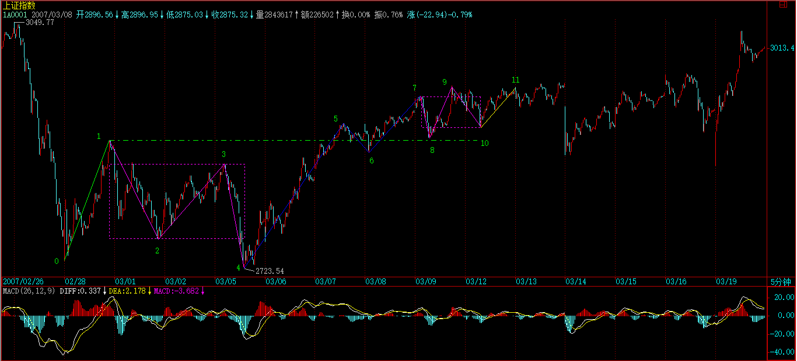
中行的启动，在周五已经提示。【韶山映山红】601988中国银行。】
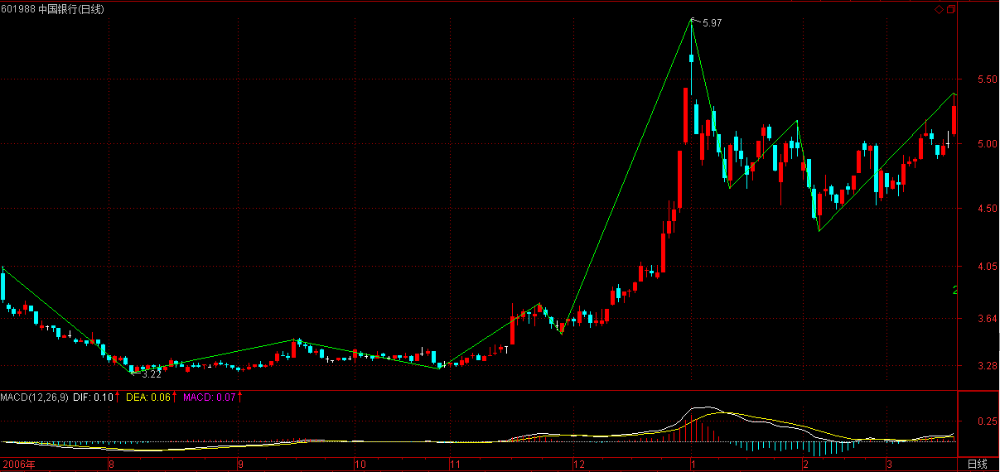
但对汉奸的战争，并不会因此而结束，更艰苦的斗争还在后面。3000点并不会因为一天的上攻而站稳。一个重要的问题就是，如果还是以老思维或者汉奸思维来统治市场的思维，那么罗杰斯之流最近的怪叫你就愿意听还是愿意听还是愿意听了。
这次大盘成分股的启动能否成功，其实取决于市场的每个参与者，火点起来了，但是否燎原，这不是本ID能决定的，市场是大家的，不是本ID一个人的。本ID已经干了所有该干的事情，当然，本ID只会根据当下的情况采取不同的手法，一定不会狂接硬撑。只要火真的燎原了，什么汉奸都是白费的。
个股没什么说的，中国经济的大局在新的经济结构，所谓改变经济增长方式，因此站在中长线角度，前期一直强调的环保（特别强调过包括新能源）、农业、军工、科技等等板块都是值得中长线关注的，这是中国经济发展的新方向。
当然，短线决战在金融股，银行、保险等，都是决战场所。显然，汉奸目前的实力还是很厉害的，本ID已经有了长期抗战的准备，越震荡，成本越低，没什么大不了的。不过，一旦有机会突破，这机会是不会放过的。大盘具体走势，按照中枢自己就可以分析，本ID要先下，还有会议在后面。
再见。
收盘有空再上来，先下，再见。
2007-3-19 08:55
今天大盘走势，完全在设计之中。中行的启动，在周五已经提示。但对汉奸的战争，并不会因此而结束，更艰苦的斗争还在后面。3000点并不会因为一天的上攻而站稳。一个重要的问题就是，如果还是以老思维或者汉奸思维来统治市场的思维，那么罗杰斯之流最近的怪叫你就愿意听还是愿意听还是愿意听了。
这次大盘成分股的启动能否成功，其实取决于市场的每个参与者，火点起来了，但是否燎原，这不是本ID能决定的，市场是大家的，不是本ID一个人的。本ID已经干了所有该干的事情，当然，本ID只会根据当下的情况采取不同的手法，一定不会狂接硬撑。只要火真的燎原了，什么汉奸都是白费的。
个股没什么说的，中国经济的大局在新的经济结构，所谓改变经济增长方式，因此站在中长线角度，前期一直强调的环保（特别强调过包括新能源）、农业、军工、科技等等板块都是值得中长线关注的，这是中国经济发展的新方向。
当然，短线决战在金融股，银行、保险等，都是决战场所。显然，汉奸目前的实力还是很厉害的，本ID已经有了长期抗战的准备，越震荡，成本越低，没什么大不了的。不过，一旦有机会突破，这机会是不会放过的。大盘具体走势，按照中枢自己就可以分析，本ID要先下，还有会议在后面。
再见。
2007-3-19 15:18
(2007-03-20 15:23:18)
子夏曰：百工居肆以成其事；君子学以致其道。
杨伯峻：子夏说：“各种工人居住于其制造场所完成他们的工作，君子则用学习获得那个道。”
钱穆：子夏说：“百工长日居住肆中以成其器物，君子终身在学之中以求致此道。”
李泽厚：子夏说：“各行各业的工匠在制作场地完成他们的工作，君子应该努力学习以完成他的事业。”
详解：
钱解基本把握了本章的语法结构，其余两人连基本的语法都没搞清楚。
“百工居肆以成其事；君子学以致其道”，其实就是“百工居肆以成其事；君子居学以致其道”的省略，这是一个典型的对称比喻句式。最可笑的是，李泽厚在“记”中大发知识分子与劳动人民的议论，连那下乡劳动改造知识分子都扯在一起，这种知识分子，确实“徒然耗费粮食“。
本章的意思很简单，直译大致就是：就像各种工匠在手工业作坊里为完成他们的制作，君子在学中为完成他们的事业。
这里，子夏把孔子鲜活的“学”变成了手工作坊一般有着具体目的、程式、规范的子夏之“学”，这就如同希腊哲学柏拉图之后将赫拉克利特的“逻格斯”变成“逻辑”，从此，一切都被结构着、程式着、基础着，而这一切都对应着一切意识形态的把戏。后世的所谓儒学，在这种意识形态化中沉沦，子夏之流，其祸大矣。
对这种危险的苗头，孔子有着特别的预见，因此就有了下面的一章：
子谓子夏曰：女为君子儒！无为小人儒！
杨伯峻：孔子对子夏道：“你要去做君子式的儒者，不要去做那小人式的儒者。”
钱穆：先生对子夏道：“你该为一君子儒，莫为一小人儒。”
李泽厚：孔子对子夏说：“你要做士大夫的儒者，不要做老百姓的巫师。”
详解：
“女”，即“汝”，你。本章字面意思十分简单，问题的关键在于什么叫“君子儒”、“小人儒”。后世把孔子挂了一个儒家的标签，但在《论语》中，只有这一章提到“儒”。
“儒”，本义指“术士”，在周代专指为贵族子弟的教师等。孔子的学生几乎就没有什么贵族子弟，至少在《论语》中，也没有记载有人把孔子称为“儒”，更没有记载孔子以“儒”为荣，甚至把自己称为“儒“的语录也一条都没有。所谓“儒家”的出现，都拜子夏之流所赐。“儒家”之于孔子，只是约定俗成、将错就错。
这里的“儒”，与后世的儒者、儒生、读书人之类都无关，孔子年代根本就没这样的说法与意指。《周礼》里有“四曰儒，以道得民”。但此文被汉代刘歆整理，是否历史真实，至少康有为是坚决反对的。胡适把“儒”当成起源于商代类似基督教牧师般的某类人，也不过是一个被西方模式所洗脑者的呓语。至于《礼记》中有《儒行》，但《礼记》只是战国及后儒生所撰，反而是一个曲解改造孔子思想的铁证，不足观。
抛开这一切关于“儒”的争论，就《论语》本身来看，孔子并没把“儒”当成一个可以代表自己的标签，这一点是十分明确的，这从“儒”在《论语》中的仅见就足以证明。
这里，还是采取《说文》“儒，柔也，术士之称。从人，需声”的标准解释，无论是贵族子弟的教师还是后来的儒者、儒生，都可以看成某种意义上的“术士”。孔子走的是刚阳一路，虽然是刚中有柔，但与“术士之柔”远非一类。
本ID在这里提出一个前无古人的论断：老子实际上是古代之“儒”的集大成者，而孔子百尺竿头更进一步，非老子之流可梦见矣。老子之“道”实“儒”，道家实际更应该称为“儒家”，而孔子之学，自从颜回先去后，并无继者，后借孔子之名而惑世者，不过如子夏般的小人儒而已。
在孔子看来，当时包括老子在内的一切所谓“儒“，都不过在小人范围内，没有智慧而自小之，都是“小人儒”。但当时的“儒”、各种的术士在社会上有广泛的影响，孔子对应着造了一个新词“君子儒”，以彰显自己主张的不同。
何谓君子儒？横天横地而不离当下，不离当下而横天横地，转“人不知”之世界为“人不愠”之世界，担当天下而无所担当，无所担当而担当天下，“闻见学行”“圣人之道”而成就之。
孔子已经看出子夏之流不堪承担，所以有本章的直接警示，也算为后世留一话头。关于孔子对其弟子的评价，下面一章最为直接。
哀公问：“弟子孰为好学？”孔子对曰：“有颜回者好学，不迁怒，不贰过。不幸短命死矣，今也则亡，未闻好学者也。”
杨伯峻：鲁哀公问：“你的学生中，哪个好学？”空子答道：“有一个叫颜回的人好学，不拿别人出气；也不再犯同样的过失。不幸短命死了，现在再没有这样的人了，再也没听过好学的人了。”
钱穆：鲁哀公问孔子道：“你的学生们，哪个是好学的呀？” 孔子对道：“有颜回是好学的，他有怒能不迁向别处，有过失能不再犯。可惜短寿死了，目下则没有听到好学的了。”
李泽厚：哀公问孔子：“你的学生中哪个爱好学习？”孔子回答说：“有人叫颜回的爱好学习。他不拿别人初期，不重犯同样的错误，却不幸早死。现在没有了，没有听见谁好学的了。”
详解：
无论“不迁怒，不贰过”是什么含义，但本章里，孔子明确表示，除了颜回，其他人都达不到他的好学标准，这一点是无疑的。这也证明了，上面说子夏之学非孔子之学，确实没有冤枉他。
不过，上面三位对“不迁怒，不贰过”的解释都有问题。
“怒”，不是通常说的愤怒、怒气，而是“超过”的意思，在《荀子·君子》“刑罚不怒罪,爵赏不逾德”中，就是按此解释；“迁“，变更、变动；“贰”，背离；“过”，超过。
古文喜欢对称，往往用一些类似又稍有差别的词语构成对称句式，“不迁怒，不贰过”中，“迁”对 “贰”，“怒”对“过”， 相互间的意思差别不特别大。
孔子之学，立于当下的现实而究底穷源，若“迁”若“贰”，则违背。而“怒”与“过”，超过当下的现实，同样违背孔子之学的基本原则。而只有颜回能领悟孔子之学的实质而能“不迁怒，不贰过”，所以被孔子所盛赞，而其他人，都如子夏般把智慧的当下呈现“迁贰”成对知识的日积月累，又怎么可能得到孔子的认可？
（待续）
大盘今天的走势是最恰当的，上次上3000是一日游，现在至少是两日游了，缩量在这里整理站稳再谋求上攻，这样是最稳妥的。其实3000点什么都不是，只是一个心理问题，包括散户与管理层。管理层的水平，其实经常连散户都不如。
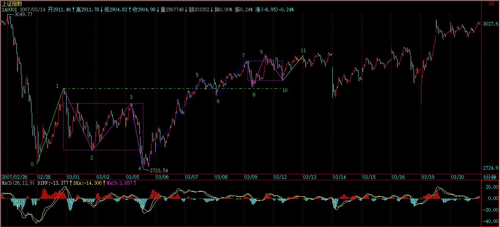
汉奸在这里肯定是要干活的，前几次喜欢用嘴配合，这次还这样就太没意思了。难道汉奸用嘴就能得到快感？总之，在这里等汉奸看能出些什么花招，最好把所有花招都使出来，让散户也多点见识，心理承受得到锻炼。
个股没什么可说的，中行等休息，其他股票活跃，这是最好的情况。不过还是要提醒，如果是中线持股，除了用部分筹码打短差，就要持得住。
并不是敢涨停的就一定是好股票。涨停算什么，最后能涨多少才是真实的。像前面说过某大叔抓不住的股票，就是600195的中牧，从去年4月中3元多开始到11元，从来就没涨停过，也没阻止他一年不到翻了5倍。【韶山映山红】600195中牧股份。】
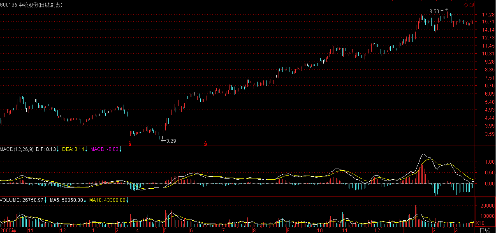
如果一个股票涨了2倍还从来没涨停过，只有一种可能，就是他要涨5倍甚至10倍，因此根本不屑于用涨停来现眼。
反复震荡爬升的股票是股票中的极品，可以弄出无数的短差来，问题不是这股票有没有涨停，而是这股票波动大吗？最终潜力大吗？一定要把问题搞清楚。【韶山映山红】波动大，就可以打短差降低成本。反复震荡爬升，最终潜力大，才是最好的缠论操作标的。股性，可以做个专题，以后研究。】
天天追涨停的，永远只能是散户，大一点的资金都根本不可能这样操作的。
2007-3-20 15:24
Anytime 2007-03-20 15:29:29
000999还可以追涨吗？
==
没有股票值得追涨杀跌。
请先去看课程。把本ID当股评也太不地道了。
2007-3-20 15:33
百思不解 2007-03-20 15:31:39
还有一个问题迷惑：
中枢就是至少三个连续次级别走势类型重叠部分所构成。
这连续三个次级别走势类型的构造有点象字母“N”，同时这个N型走势本身也可看做一个盘整走势了。另外象W型走势或M型走势，也都只有一个中枢，即都可看作盘整走势。
那么三个同级别的盘整走势，比如“M+N+W”组合，按中枢定义只要是连续且有重叠，就构成了高一级的中枢了。那这个中枢第1和第2个Z走势段，根本没有方向啊？这个中枢本身也没有方向吧？象M型盘整或W型盘整本身，也没法谈论什么方向问题吧？
==
请去看看连接运算的结合性。
2007-3-20 15:40
[匿名] ED男猿 2007-03-20 15:37:34
我今天就一个股没坐稳，抛后大涨。
心态浮躁，离市场太近未必是好事。
==
不是离市场太近，而是离市场太远。
何谓近？对市场的当下一目了然；
何谓远？对市场走势毫无头绪，只会瞎蒙。
当你知道市场在干什么，心自解脱，不会被市场的波动所迷惑。
2007-3-20 15:44
一粒米 2007-03-20 15:41:57
缠MM好!科技创新类(有自主知识产权)股票理应会是07年行情的主轴之一吧?
==
对，还有农业、环保、军工，以及第三产业，像旅游之类的。
【韶山映山红】000802北京旅游，2014.10.24变更为北京文化。这里是第二次提“旅游”。】
2007-3-20 15:46
[匿名] 百思不解 2007-03-20 15:30:51
缠MM好！求教：
通常提到背驰或盘整背驰，都指a+A+b这样的三段，其中A是一个本级中枢，a、b是次级以下走势，b与a比较是否背驰或盘整背驰。
那么三个连续次级走势a+b+c，构成一个本级中枢（或abc就是一个有三段次级走势的本级盘整走势），a和c也应算是围绕本级中枢的波动吧？那么a和c能做盘整背驰比较吗？
==
只要能比较力度，就可以用盘整背驰的方法。【韶山映山红】能比较力度，就可以用盘整背驰的方法。那么，什么样能比较力度、什么样不能比较力度？ 盘整背驰分析包括abc盘整背驰、a+A盘整背驰、a+A+b盘整背驰，相应的形态要求就是能不能的界限。 背驰是动力学范畴，盘整背驰也是。】
而背驰，必须在趋势中，因为背驰意味这一个趋势的结束，【韶山映山红】趋势背驰意味着趋势走势类型这个结构的结束。】而盘整背驰不一定，可能还是同一个走势类型里。【韶山映山红】盘整走势类型的结束，要出现第三类买卖点，实际上是次级别走势离开的演化，而这个演化并不完全受本级别盘整背驰的约束，所以盘整背驰不一定会导致盘整走势类型的结束。】
2007-3-20 15:54
一粒米 2007-03-20 15:41:57
缠MM好!
科技创新类(有自主知识产权)股票理应会是07年行情的主轴之一吧?
==
对，还有农业、环保、军工，以及第三产业，像旅游之类的。
------
一粒米 2007-03-20 15:53:14
缠MM好!
我觉得还有生物药业也是吧?谢谢!
==
药是去年就一直强调的，药是去年的酒，这话应该记得。
2007-3-20 15:57
[匿名] 中间体 2007-03-20 15:53:55
国家政策是扶持农业, 但农业股一般都是业绩平平, 有潜力吗?缠姐.
==
对农业的动作大了去了，现在还没开始。新农村建设是中国稳定的基石，不明白这，就不懂农业。
2007-3-20 15:59
有事先下，晚上再来
2007-3-20 16:00
刚有一个会，晚上还有点应酬，不过是7点以后的事，抓紧时间回答几个问题，最近太忙，只能如此了。
2007-3-20 17:22
[匿名] 一头雾水 2007-03-20 16:02:35
1、肯定具备中枢？最低级别分笔成交并不一定具备连续3笔同样价格就翻转的情况，个人认为是理论的不确定因素
==
理解错误，谁说连续三笔就翻转的？
其实，这个定义并没有什么绝对性，明白数学中递归定义的实质，就知道对a0是如何定义，并不影响aN+1=f(an)的函数定义。就像分段函数中各段的定义之间可以是互无关系的。【韶山映山红】初始化函数不影响递归函数。】
复习一下数学中关于递归的定义，会有帮助的。

【韶山映山红】文字版的公式没有字母的大小，这样是不是更清楚？】
2、中枢的公用问题。对于将1分钟最为最低，存在中枢公用的情况，假设1分钟涨势的只有高点和低点，形成中枢，紧接的1分钟跌势同样，那么存在两段走势公用高点中枢的情况
==
你要好好看看走势连接的结合性。哪里存在公用的问题？
3、a+A+b+B+c中，B不必然是A同级别的，我理解为这样一个走势类型的第二个中枢存在于B中，但是实际情况并不一定。
当我不能超逻辑的时候，需要逻辑的定义，希望早日出数学精确定义
==
还是好好研究结合性。结合性里，归到前面括号的在同一式子里就不能归到后面的括号，A+（B+C）不等于（A+B）+（B+C）。
关于中枢、扩展、延伸等的精确定义，都有了，要理解就好好去研究相应的公式。
2007-3-20 17:39
[匿名] 小学生 2007-03-20 17:37:11
先报到.
看了缠姐的一些炒股文章,觉得有点晕,不知道应该从哪章开始学起?
==
从头看起，但从有了中枢概念，前面关于均线的都只能是辅助，不要混在一起就行。
2007-3-20 17:40
[匿名] 努力学习 2007-03-20 17:33:57
楼主好，第18课有个定理有点疑问，该怎么理解？
定理三：某级别“缠中说禅走势中枢”的破坏，当且仅当一个次级别走势离开该“缠中说禅走势中枢”后，其后的次级别回抽走势不重新回到该“缠中说禅走势中枢”内。这定理三中的两个次级别走势的组合只有三种：趋势+盘整，趋势+反趋势，盘整+反趋势。
这定理三中提到的两个次级走势组合，比如“趋势＋盘整”，是否同级？这里说的是两个同级走势的连接，还是从走势组合观点看，那个盘整中枢级别高于趋势中枢级别？
==
这和连接的结合性有关。简单说，只要能分解出两段次级别走势就可以。【韶山映山红】也就是说，并不要求是完整的标准走势类型，而是分解出符合要求的两段即可。】
详细情况，下几堂课程会说到，请耐心等等。明天就继续说这几种不同分解的问题。【韶山映山红】随后开始的内容是同级别分解！！！所以，定理三那里说的三种组合是一般的走势划分，而第三类买卖点是同级别划分。★可以做个专题。以后研究。】
2007-3-20 17:51
[匿名] 树叶红了 2007-03-20 17:47:27
读缠MM文章，渐渐悟其精义。希望做缠的颜回。
很少有机会能请教到，今天幸得一机会。
大盘从01.04调整到现在，从30分钟K线图上分明有16段了。按照博主的理论，3段30分钟的形成日线中枢，9段重叠则构成周线中枢，则现在周线中枢已经形成了。
此说对吗？但怎么没有人说形成了周线中枢？
读缠MM文章收获很大，谢谢缠MM！
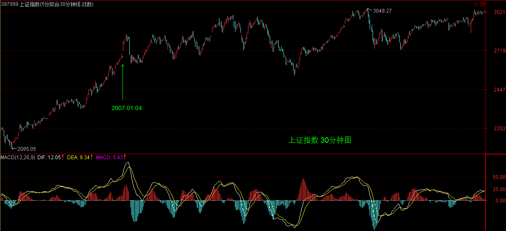
==
很多其实都是5分钟级别的，现在如果能直接上去，这里的级别和去年5月后那次是一样的，只能算是日线级别的中枢。
所以本ID前面说，甚至周线级别的中枢都不一定给汉奸面子。
2007-3-20 17:54
[匿名] 白玉兰 2007-03-20 17:45:27
禅妹妹：
我看了一下农业里有皮棉，生猪，蘑菇，种子，还有。。。
有关注重点吗？
==
其实现在的农业模式都是错的，农业股的潜力在于去挖掘一个真正适合的模式。本ID现在干的一件比股市里更大的事情，就是要把为中国的新农村建设构建的一种新模式推广出去，这涉及很大的方面。现在的人根本就不知道农业该怎么搞。
但国家的资源，将全力向农业倾斜，这个趋势是不可变改的。对于农业来说，大家的起跑线是基本一样的。目前暂时还是炒概念，但陆续有实质性的东西就会出来了，谁说搞农业的就搞不过白酒、有色之类的？这是一个长线的，至于实质的东西往哪个股票装，那是另外的问题了。蛋糕那么大，只要搞，都有份的。
2007-3-20 18:02
[匿名] 大盘 2007-03-20 17:57:52
博主：
请问，与股票相比，外汇买卖有什么特别不同的吗，或者说使用博主中枢理论需要更注意些什么，如果完全方法一样，炒外汇似乎可以有更多时间去打理，毕竟是24小时交易。而且现在交通银行也推出了5-15倍杠杠的外汇保证金交易，算起来一天的波动与股票接近。
==
期货趋势的延伸性特别强，
所以如果不熟练的，用第二类买卖点比较安全，【韶山映山红】“期货趋势的延伸性特别强”，什么意思呢？股票有一个特点，就是流通的总股数是不变的，趋势背驰的时候，买卖力量的衰竭更真实，而期货没有总量的制约，可以调动更多的资金做出更多的交易，即使趋势背驰，也更容易被小级别延伸破坏掉，也就变成了趋势背驰之后的趋势延伸。所以“用第二类买卖点比较安全”，毕竟出现本级别的第二类买卖点的时候，考察趋势背驰的第一段反弹和形成二买的结构，可以更好的分析转折的可能性。】就怕你判断错误，在趋势延伸时当成第一类买卖点，就问题大了。【韶山映山红】这个“判断错误”是什么样的错误？趋势背驰的判断可能涉及到的问题，一是区间套背驰判断，一是小级别延伸破坏大级别背驰的判断。把趋势延伸当成第一类买卖点，说明没有趋势背驰，而不是背驰被破坏。】
还有很多不同的地方，以后会说到的。
不过，如果股票走势都判断不好，那就别玩什么期货了。先学会走，才能跑。【韶山映山红】股票是走的难度，期货是跑的难度。】
2007-3-20 18:07
[匿名] 善存 2007-03-20 17:17:24
支持一下
医药还继续会是去年的酒吗?
==
已经是而且继续是。
2007-3-20 18:07
[匿名] 缠文观止 2007-03-20 17:35:58
博主回来啦，还记着帮我们解答问题，感动ing...
下午的问题我重帖一下：
“缠中说禅买卖点定律一”：任何级别的第二类买卖点都由次级别相应走势的第一类买卖点构成。
---------
上面的“缠中说禅买卖点定律一”，能简单证明一下吗？有个证明对真正理解第二买点会有很大帮助，否则实践中还是模糊，找不好次级别相应走势的结束点。中枢概念出来后，第一、二类买卖点在博文中似乎没有特别精确的定义，实践中细节还是把握不好。能不能象第三买点那样，给出公式性的定义？
另外，第三类买卖点是否与第二类买卖点类似，也由“次级别”相应走势的第一类买卖点构成？还是“次次级别”第一类买卖点构成？
还有个关于第三买点问题，比如一个“下上下”的30F中枢，第三段“下”完成后紧接着一个5F走势向上突破，接着又是一段向下的5F回抽走势不破30F中枢。这个5F回抽走势如果是盘整的话，完全可能不断延伸，怎么确定其结束点呢？好像看次次级一类买点也解决不了这个次级盘整延伸问题。
==
所有买卖点，归根结底都是第一类买卖点，只是级别不同而已。【韶山映山红】所有买卖点，归根结底都是第一类买卖点，但不一定是次级别的。】
没有绝对的规则可以预先区分盘整与趋势的，第三类买点后，必然面对两个选择，就是大级别盘整或一个趋势。【韶山映山红】有一般的规则去预判，问题是小转大能破坏一切。】
问题不是去预测究竟最后走出哪个，这样的思维是有问题的，而是当下走出什么情况立刻采取相应的操作策略。【韶山映山红】先按照一般的规则去操作，一旦发现小转大，马上做相应的改变。】
对盘整，就是制定好相应的操作策略，把筹码成本降下来，直到出现第三类买卖点为止。
像盘整延伸的问题，根本就无须去预测，只要走出第三类买卖点，自然就结束。至于什么时候走出，这涉及预测，任何涉及预测的，都是或然的。【韶山映山红】小转大不可预测，导致或然。】
当然，可以有很多配套的手段使得准确率高达90%以上，但这另外的问题。【韶山映山红】一般的规则有准确率的保证。但也免不了踏空或被套。不能绝对地掐准每一个转折点。】
2007-3-20 18:16
[匿名] 朗月无花 2007-03-20 18:12:35
正在看你的理论，感觉困惑。你反复强调买点买、卖点卖。但对于小散户就有了一个问题，因为你的每一个举例都是1年2年才有买卖点。那可是太漫长了。如何短期操作啊？？
=＝
怎么现在还问这种问题，应该再看课程。
你需要1天发现10个买卖点，也很简单，看分笔图就可以。如果你看1分钟图，一天怎么也能弄1、2个买卖点，弄权证就可以。
任何级别的操作模式是一样的，你明白了日线的，自然就可以去操作1分钟、5分钟的。问题是，你的资金、反应等是否适合去操作1分钟的。
2007-3-20 18:20
[匿名] 刻股铭心 2007-03-20 18:12:15
我们这也搞什么新农村建设 就是把老百姓的房子全扒了 不管新的 旧的 然后统一规划 统一建设一样的房子 这就是新农村啊
==
关于新农村的新模式，这里已早成熟，具体就不能说那么多了。总之，是超过现在可见的所有模式，新模式已经得到最权威的认可，不过下面还不知道而已。推广将全面展开，具体也不能多说了。
2007-3-20 18:25
[匿名] sn 2007-03-20 18:24:05
缠博主太辛苦了，我等在此深谢了．
==
没问题，有时间就多回答两个问题，但7点一定要走了，还有一个应酬安排在8点。
2007-3-20 18:26
[匿名] 业余小散户 2007-03-20 18:19:07
其实现在的农业模式都是错的，农业股的潜力在于去挖掘一个真正适合的模式。本ID现在干的一件比股市里更大的事情，就是要把为中国的新农村建设构建的一种新模式推广出去，这涉及很大的方面。现在的人根本就不知道农业该怎么搞。
但国家的资源，将全力向农业倾斜，这个趋势是不可变改的。对于农业来说，大家的起跑线是基本一样的。目前暂时还是炒概念，但陆续有实质性的东西就会出来了，谁说搞农业的就搞不过白酒、有色之类的？这是一个长线的，至于实质的东西往哪个股票装，那是另外的问题了。蛋糕那么大，只要搞，都有份的。
---------
中国如果败，最终就在农业上。小布什已经布好局了，今年九月农业补贴会大幅缩减，而最重要的是新能源补贴(鼓励玉米酿酒精）的法案。估计美帝最后的攻击，肯定是等中国自然灾害的时候大幅拉升农产品价格，再配合大幅加息，当然加息前先在A股，港股股指上建好空仓，甚至日元上也建好空仓。这样，中国如果不加息则无法应付通涨，如果跟随大幅加息，则外资大量逃离中国，回到美国，美就可以利用再一次的亚洲金融危机解决自己的问题了。欢迎指正。
==
你也太高看美国了，美国就是一个病人，自己能活下来已经不错。中国只要把自己的事情搞好，谁都没本事对中国怎样。在农村问题上，新农村的新模式已经把这些因素考虑其中。
2007-3-20 18:30
[匿名] aaaaa 2007-03-20 18:10:05
老大:股指期货推出会引起大跌吗?
请评一下股指期货推出对大盘的影响.
==
站在纯走势的角度，这些问题都是假问题。【韶山映山红】“纯走势的角度”，技术分析的形态学和动力学的分析方法都不会变。】
股指期货推出，对大盘的中长线趋势没有任何的影响，不过是一个借口与题材。
但股指期货出现后，会加大走势的延伸性，这是必须注意的。
有了股指期货后，以后的指数，盘整的延伸将加强，但一旦突破形成趋势，那趋势的延伸也会加强。
但总体大方向是没有任何影响的。
【韶山映山红】前面问答说过，“期货趋势的延伸性特别强”，可能是因为趋势背驰更容易被小级别延伸破坏掉，也就变成了趋势背驰之后的趋势延伸。“股指期货出现后，会加大走势的延伸性，”这又是为什么呢？“盘整的延伸将加强”，也就是说，更难形成趋势，因为更难形成趋向性的一致？所以“一旦突破形成趋势，那趋势的延伸也会加强。”是因为一旦有了趋向性的共识，即使遇到问题也难以打破共识？★可以做个专题。以后研究。】
2007-3-20 18:36
[匿名] sn 2007-03-20 18:33:10
缠博主开门收徒吧！这个博里从学识到人品崇拜你的如过江之鲸．也不乏有识才俊！多几个帮手不更好吗？
==
人人皆佛，不要憋屈自己。就算当本ID的徒弟，也是憋屈自己。
天地都是你的，关键是先把自己的眼打开。
千里同风，何必开门收什么徒。
2007-3-20 18:39
[匿名] ED男猿 2007-03-20 18:34:24
正好老大在，提个问题
关于上下影线的问题
对于两个中枢间的上下影线重叠，有时这仅仅是一非常快带的波动，而如果就将此认为扩展，觉得不妥，不知如何处理，比如说，海尔沽权的0.001，这个下影应该是可以忽略的吧。
记得以前老大回答过同样的问题，老大说看3根分钟线是否重叠，否则无效，请问这3根是连续的，还是只有属于一个中枢就行？
==
中枢算的是重叠部分，既然这样，一个偶然的波动就不会算到中枢里了。围绕中枢的波动，在理论上是可以任意价位的，但这不构成任何实质影响。【韶山映山红】偶发性的异动造成的特殊情况，不论是笔、线段划分，还是中枢、走势类型划分，都难免受影响。“不构成任何实质影响”，是否意味着可以进行人工的选择，去忽略那些没有被反复确认的异动？★★以后研究。】
2007-3-20 18:44
[匿名] 麒麟 2007-03-20 17:35:06
缠妹妹好,去年我弄亏的一只股600328,我做中长线,如果看日k线,按您的理论,怎么才能在2006-2-7,逃跑掉啊!(好象那时看不到卖点啊!) 【韶山映山红】600328兰太实业。】
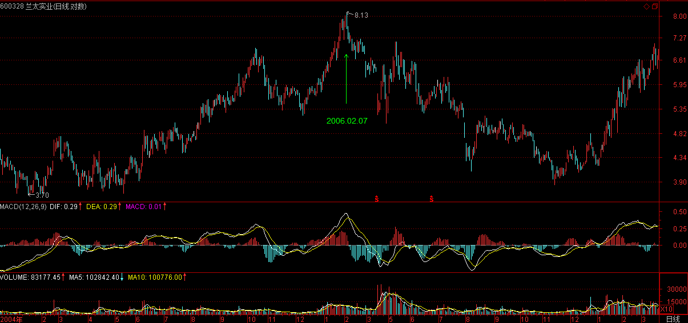
==
卖点要看小级别的。【韶山映山红】小转大。】
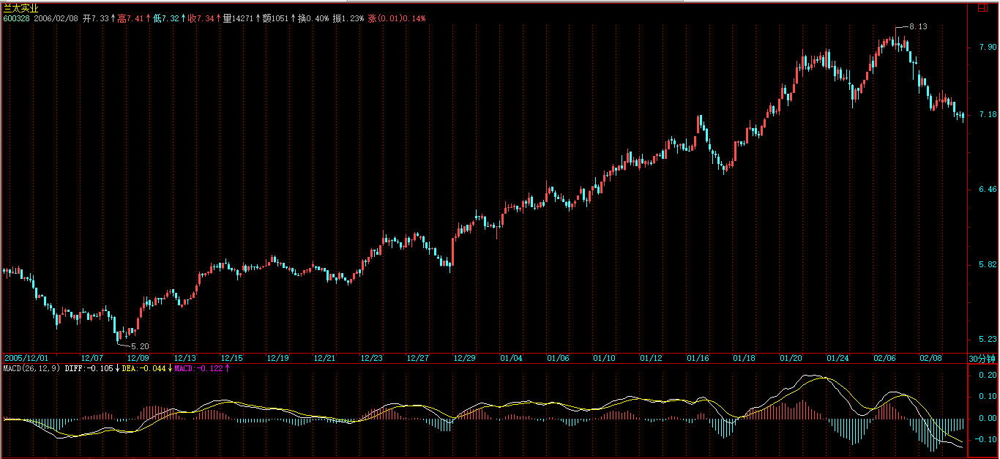
此外，5月15日，价位实质更高，那位置就可以用日线中枢震荡的力度来判断卖出。【韶山映山红】复权之后才有“价位实质更高”，那么缠师一贯说的不复权就有问题了。除权后不能填权甚至新高的，都有背驰的问题。可以做个专题，以后研究。】
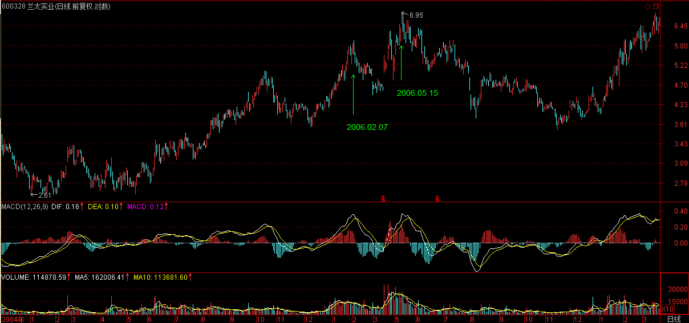
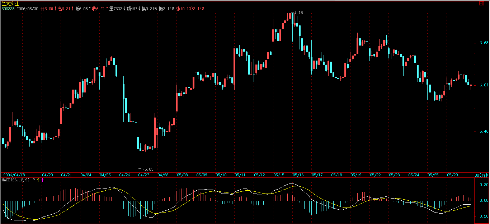
2007-3-20 18:49
必须下了，再见。
2007-3-20 18:49
[匿名] 勇敢的心 2007-03-20 18:49:09
请教缠主:关于第三买点,日线上是否次级别就一定要30分钟的走势?是否这个走势要完美?
==
临走回答一下，关键是你的级别是如何事情规定的，【韶山映山红】“事情规定”，事先规定。】例如你是按5、15、60、日，周等安排级别的，那次级别就是15分钟的。【韶山映山红】什么情况？这样的级别设定，日线的次级别不是应该60分钟吗？怎么是15分钟呢？★以后研究。】
关键级别的安排，是为了免除从最小级别一直看上来的麻烦，这样会导致一些误差，但不会影响任何操作，所以是一个实用的办法。【韶山映山红】不从最低级别开始递归，以Ｋ线图周期代替真正走势的级别，就“会导致一些误差”，但是因为级别足够大，作为一个“一个实用的办法”，“不会影响任何操作”。比如实际的划分经验告诉我们，30分钟Ｋ线图的线段划分，和1分钟线段中枢递归出来的5分钟走势划分，就有很大程度的一致性。】
当然需要走势完美，所谓走势完美，实质上就是必须形成相应级别的中枢，如何你连30分钟的中枢都没有，怎么算是30分钟走势？一旦中枢形成，该走势就是完美的，可以随时结束，至于是否延伸，那是另一个问题。【韶山映山红】这里的走势完美，就是走势的形成，而不是完成。一个中枢形成，盘整就是完美的；两个中枢形成，趋势就是完美的。至于这个走势是如何结束的，是否有相应的背驰，是否小转大，就不管了，“那是另一个问题”。】
2007-3-20 18:55
必须走了，再见。
2007-3-20 18:56
本课目录
教你炒股票37：背驰的再分辨【网文】背驰的再分辨周末音乐会30：最伟大男高音神州自有中天日，万国衣冠舞九韶《论语》详解：给所有曲解孔子的人（58）子夏曰：百工居肆以成其事；君子学以致其道。子谓子夏曰：女为君子儒！无为小人儒！哀公问：“弟子孰为好学？”孔子对曰：“有颜回者好学，不迁怒，不贰过。不幸短命死矣，今也则亡，未闻好学者也。”